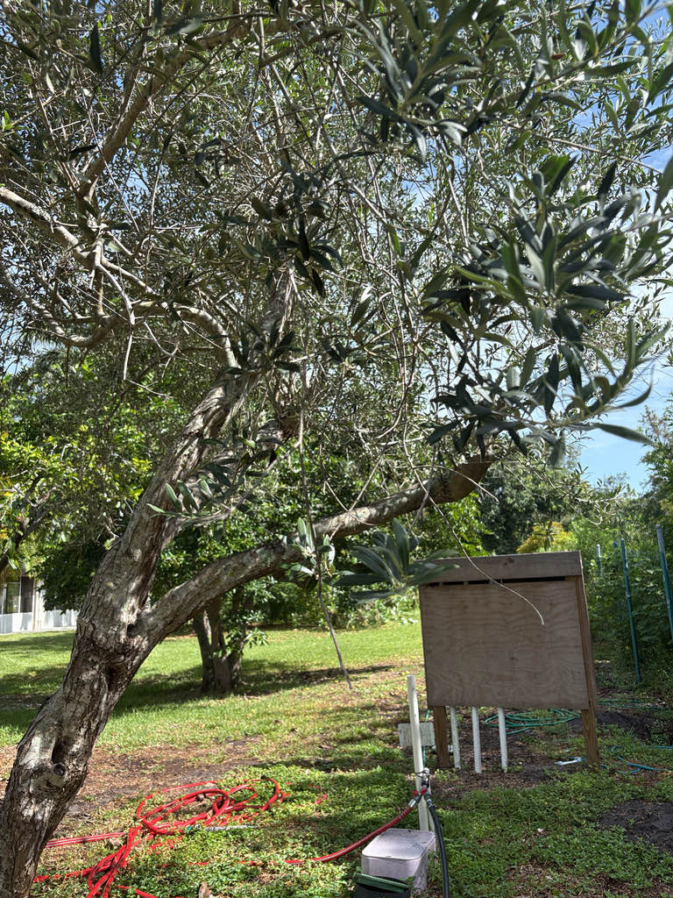

- Olives are among the oldest cultivated plants on Earth. DNA analysis traces domestication to the eastern Mediterranean — the region of present-day Turkey and Syria — roughly 6,000 to 8,000 years ago, and fossil evidence of wild olive ancestors pushes back even further, to 20 to 40 million years ago.
- A fresh olive picked off the tree is almost completely inedible — intensely bitter from a compound called oleuropein. Every table olive you have ever eaten was first cured, brined, or fermented to break that bitterness down. The process is ancient, but the chemistry is real.
- Olives are primarily wind-pollinated, not bee-pollinated. The small flowers produce abundant pollen that drifts on air currents — and that pollen is one of the more potent tree allergens in the regions where olives are widely grown.
- Here in central Florida, fruiting is unreliable: olive trees need several hundred hours of temperatures below 45 degrees F each winter to trigger flowering. Most years, Bradenton simply does not get cold enough, making this tree more ornamental than productive in our landscape.
The olive is native to the Mediterranean Basin and western Asia, with its wild ancestor, the oleaster, naturally distributed from the Levant through Greece, Italy, Spain, Portugal, and North Africa. Domestication began in the eastern Mediterranean — the area of present-day Turkey and Syria — at least 6,000 years ago, making it one of the oldest continuously cultivated food trees in the world.
From its eastern Mediterranean heartland, olive cultivation spread westward with Greek and Phoenician traders, eventually reaching every shore of the Mediterranean. Spanish explorers carried cuttings to the Americas in the 1500s; Franciscan missionaries introduced the tree to California in the 18th century.
In Florida, olive trees have been grown since at least the 1700s, though commercial cultivation remains limited and experimental, concentrated in the state's northern tier where winter chill is most reliable.
- The olive lends its name to the entire Oleaceae family — a clan that also includes lilac, jasmine, forsythia, and ash. The genus name Olea is simply the Latin word for olive, and the species epithet europaea reflects where European botanists first formally described it, though the tree's true heartland is further east.
- There are roughly 20 species of Olea found in tropical and subtropical regions worldwide, but only Olea europaea produces the familiar edible fruit.
- Olive wood is famously dense and decay-resistant. When the top of a tree is killed by frost, disease, or cutting, new shoots commonly arise from the root system — a regenerative habit that has allowed some groves to persist for centuries.
- Some specimens in the Mediterranean are credibly reported to have lived for 1,000 years or more, and the trunks of old trees become dramatically gnarled and hollow over time without losing vitality.
- The tree has a notable tendency toward alternate bearing: a heavy fruit crop one year is often followed by a light one the next. Commercial growers manage this through careful pruning and nutrition, but it remains one of the defining rhythms of olive horticulture.
The flowers are small, creamy-white, and lightly fragrant, appearing in spring. Pollination is primarily by wind — the tree produces abundant, lightweight pollen — though bees do visit and collect pollen as a food source. The flowers are not a significant nectar resource by bee-pollinator standards, and no documented association with Florida butterfly species as a larval host has been found.
When fruit does set, the ripe drupes can be taken by birds. In Florida's central region, however, reliable fruiting is uncommon due to insufficient winter chill hours, so wildlife value here is modest and centers mainly on the spring pollen flush and the tree's evergreen canopy as shelter.
Small, creamy-white, and four-petaled, carried in branched clusters called panicles that arise from the leaf axils on the previous year's wood. Flowers appear in spring — typically April to May in Florida.
The tree is hermaphroditic (each flower has both male and female parts), and most cultivars are at least partially self-fertile, though cross-pollination between two individuals generally improves fruit set. Pollination is primarily by wind.
A fleshy drupe with a thin skin, a single hard pit, and oil-rich flesh. Fruits start green and ripen to blackish-purple (or copper-brown in some cultivars) over the course of the summer and fall. Fresh olives are intensely bitter and require curing or brining before they are palatable.
Narrow, lance-shaped, and arranged in opposite pairs along the stem. The upper surface is gray-green; the underside is distinctly silvery, covered in tiny scales that reflect light and slow water loss — a clear adaptation to the hot, dry Mediterranean summer. Leaves are evergreen and persistent.
Young stems are smooth and gray-green, with characteristic corky lenticels (small raised pores) visible even on thin branches — a trait shared across the Oleaceae family. With age the trunk thickens, darkens, and becomes deeply furrowed and twisted, sometimes developing hollow chambers in very old specimens. New shoots can regenerate from the root system if the crown is damaged.
The two-toned leaves are the easiest field mark at any time of year: hold a branch up to the light and you will see gray-green on top and bright silver beneath. In spring, look for small creamy-white flower clusters nestled at the base of the leaves along the stems. The corky, pore-dotted texture of young stems is subtle but distinctive up close and shared by other members of the olive family.
If the tree is fruiting, the small oval drupes hanging in clusters — green first, darkening toward black — are unmistakable.
Raw olives straight from the tree are too bitter to eat comfortably — the compound oleuropein makes them astringent and unpleasant. They are not toxic, but they need curing, brining, or fermenting before they become the table olives you know. The olive oil pressed from ripe fruit is, of course, perfectly safe.
The tree itself is non-toxic to people, dogs, and cats according to the ASPCA and major veterinary databases; a nibble on a leaf or bark will not harm a pet.
One real nuisance worth noting: olive pollen is a potent allergen, and people with tree-pollen sensitivities may find the spring bloom uncomfortable.
There are hundreds of named olive cultivars worldwide, selected over millennia for oil content, fruit size, flavor, curing characteristics, or low-chill requirements. A handful of cultivars bred for reduced chill needs have been trialed in Florida, but the state's olive industry remains small and largely experimental.
Olive pollen allergy is a serious concern in Mediterranean regions and in parts of California and Arizona where large-scale olive cultivation is common. Florida's limited planting keeps airborne olive pollen at low levels here, but people with known tree-pollen allergies may still notice a mild response during the spring bloom period.


- © Hailee Alenduff (CC-BY-NC), via iNaturalist